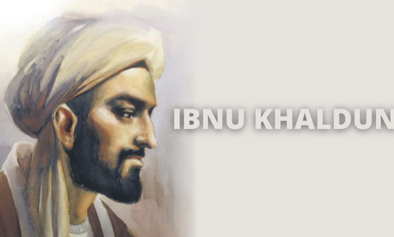

5 ilmuan muslim
Peradaban manusia dari zaman ke zaman terus berkembang karena berbagai penemuan ilmuwan. Ternyata banyak juga ilmuwan muslim yang ikut berkontribusi karena penemuannya. Ilmuwan muslim tersebut berkontribusi dalam penemuannya di berbagai disiplin keilmuan. Mulai dari kesehatan, navigasi laut, sains, pertanian hingga matematika. Penemuan-penemuan mereka saat itu masih dipakai hingga saat ini. Penemuan ilmuwan muslim tersebut bahkan menjadi dasar bagi ilmuwan lain untuk mengembangkan keilmuan dan teknologi sekarang ini. Misalnya saja Ibnu Sina yang merupakan ahli dalam bidang kedokteran dan anatomi tubuh. Selain itu, ada juga Abu Khair, ilmuwan dalam bidang pertanian. Berikut Lima Ilmuwan Muslim dan Penemuannya:
1.Ibnu sina

Nama Ibnu Sina dengan nama latin Avicenna mungkin sudah familiar bagi kita. Ibnu Sina berasal dari Afshana, Bukhara yang saat ini masuk ke dalam wilayah Uzbekistan. Al-Qaanuun fii Al-Thibb merupakan penemuan terkenal Ibnu Sina yang sampai saat ini menjadi referensi di bidang kedokteran. Selain itu, Ibnu Sina juga menjadi penemu manfaat etanol yang digunakan untuk membunuh mikroorganisme hingga saat ini dalam dunia medis. Ilmuwan yang sejak kecil sudah Al-Quran ini juga menjadi sosok yang menemukan teori penularan penyakit tuberkulosis (TBC). Di awal banyak yang menentang teorinya tersebut, hingga akhirnya setelah ditemukannya mikroskop, maka teorinya tersebut benar dan diterapkan dalam dunia medis.
2.Ibnu Khaldun
Ibnu Khaldun merupakan ilmuwan muslim yang lahir di Tunisia. Ilmuwan muslim ini merupakan sosok yang disebut sebagai bapak sosiologi, perintis ilmu Ekonomi, teori politik, dasar Filsafat Sejarah, dan masih banyak lagi sebutan lainnya. Kitab Al-Ibar merupakan karya ilmuwan muslim yang hingga saat ini digunakan dalam ruang-ruang akademis, seperti kampus. Karyanya tersebut berisikan tentang pemikirannya mengenai sosiologi, padahal di zaman itu istilah sosiologi belum ada. Sehingga para ilmuwan dari Eropa banyak yang tercengang dengan pemikiran ilmuwan muslim ini yang dianggap melampaui zamannya.
3.Al-Jazari

Al-Jazari merupakan ilmuwan muslim yang lahir di Mesopotamia yang saat ini masuk wilayah Irak. Ilmuwan muslim ini dikenal sebagai penemu konsep dasar robot yang di abad ini sangat berkembang. Mesin pompa air merupakan salah satu hasil penemuannya yang bermanfaat bagi umat manusia. Apalagi zaman dulu, mendapatkan air yang sumber bersih cukup sulit, apalagi mengeluarkannya dari tanah. Selain itu, Al-Jazari juga merupakan penemu mesin engkol dan roda bergigi. Penemuannya ini sangat membantu umat manusia dan hingga saat ini penemuannya ini masih digunakan.
4.Al Khawarizmi

Al Khawarizmi merupakan ilmuwan muslim yang berasal dari wilayah Iraq saat ini. Pria yang lahir pada tahun 780 ini memberikan banyak warna dalam bidang matematika dan fisika. Penemuannya dalam bidang matematika dan dipakai hingga saat ini adalah Aljabar. Selain itu trigonometri dan astronomi juga menjadi penemuannya, hingga akhirnya dapat memecahkan berbagai masalah yang selama berabad-abad tidak dapat dipecahkan. Ilmuwan muslim ini juga ternyata menjadi sosok penemu algoritma yang banyak membantu peradaban manusia dalam bidang teknologi. Angka nol (0) yang menjadi awalan perhitungan matematika, juga ternyata ditemukan oleh ilmuwan muslim ini.
5.Al-Battani

Al-Battani merupakan ilmuwan muslim yang berasal dari Iraq. Sosok ini dikenal sebagai ahli astronomi dan matematika. Penemuannya yang paling menyita perhatian adalah penentuan tahun yang hingga saat ini kita gunakan. Sosok ilmuwan muslim ini lah yang menemukan dan meletakkan teori bahwa matahari memiliki waktu edar selama 365 hari, 5 jam, 46 menit, dan 24 detik. Dengan penemuannya tersebut, terbentuk kalender yang saat ini kita gunakan.